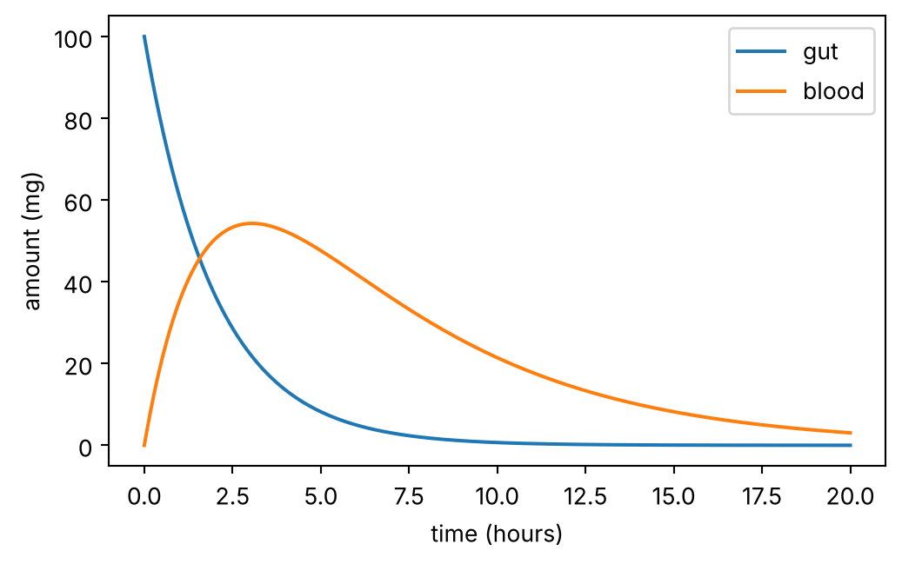

Solutions to the exercises in Part IV, grouped by chapter, followed by the solutions to the Part IV review. Try each exercise before reading its solution. The link after each solution takes you back to its exercise.
1. The trace is 7 and the determinant is \(10 - 4 = 6\), so \(\lambda^2 - 7\lambda + 6 = 0\), giving \(\lambda = 6\) or \(1\). For \(\lambda = 6\), \(\M{A} - 6\M{I} = \mat{-1 & 2 \\ 2 & -4}\); its first row says \(-x + 2y = 0\), so \(x = 2y\) and \(\vect{v} = (2, 1)\T\) (the second row says the same thing, as it must). For \(\lambda = 1\), \(\M{A} - \M{I} = \mat{4 & 2 \\ 2 & 1}\), whose second row says \(2x + y = 0\), so \(\vect{v} = (1, -2)\T\). Check: \(6 + 1 = 7\) is the trace and \(6 \times 1 = 6\) is the determinant. ✓
2. The matrix is triangular, so the eigenvalues are the diagonal entries: 2, \(-1\) and 3. For \(\lambda = 2\), the first column of \(\M{A} - 2\M{I}\) is zero, so \(\vect{v} = (1, 0, 0)\T\) works: \(\M{A}\vect{v}\) is the first column of \(\M{A}\), which is \((2, 0, 0)\T = 2\vect{v}\).
3. The matrix splits into a \(2 \times 2\) block \(\mat{1 & 2 \\ 2 & 1}\), with trace 2 and determinant \(-3\), so eigenvalues 3 and \(-1\), and the single entry 3. So the eigenvalues are 3 (twice) and \(-1\).
For \(\lambda = 3\), \(\M{A} - 3\M{I} = \mat{-2 & 2 & 0 \\ 2 & -2 & 0 \\ 0 & 0 & 0}\), which says only \(x = y\), so the eigenspace is the plane spanned by \((1, 1, 0)\T\) and \((0, 0, 1)\T\), of dimension 2. For \(\lambda = -1\), the eigenspace is the line through \((1, -1, 0)\T\). The repeated eigenvalue has two independent eigenvectors, so the matrix is not defective.
5. The trace is 0 and the determinant is 4, so \(\lambda^2 + 4 = 0\) and \(\lambda = \pm 2i\). The matrix is \(2\mat{0 & -1 \\ 1 & 0}\): a rotation by \(90°\) followed by scaling by 2. No direction is left on its own line, which is why there are no real eigenvalues.
6. The discriminant of \(\lambda^2 - (a + d)\lambda + (ad - bc) = 0\) is \[
(a + d)^2 - 4(ad - bc) = (a - d)^2 + 4bc.
\] If \(b\) and \(c\) have the same sign, \(bc > 0\), so the discriminant is positive and both eigenvalues are real (and different).
The eigenvalues are \(2 - \sqrt{2} \approx 0.586\), \(2\) and \(2 + \sqrt{2} \approx 3.414\), with eigenvectors proportional to \((1, \sqrt{2}, 1)\), \((-1, 0, 1)\) and \((1, -\sqrt{2}, 1)\) (software may flip their signs).
Lowest frequency: all three masses move the same way together, the middle one furthest.
Middle frequency: the outer masses move in opposite directions and the middle one stays still.
Highest frequency: the outer masses move together and the middle one moves the opposite way, by more.
The more the neighbouring masses move against each other, the more the springs between them stretch, and the higher the frequency.
2. With \(\vect{x}_k\) holding the shares of brands 1 and 2, each column of \(\M{M}\) says where one brand’s customers go: \[
\M{M} = \mat{0.7 & 0.4 \\ 0.3 & 0.6}.
\] The columns add to 1, so 1 is an eigenvalue, and the other is the trace minus 1, which is \(0.3\). For \(\lambda = 1\), \(\M{M} - \M{I} = \mat{-0.3 & 0.4 \\ 0.3 & -0.4}\), giving the eigenvector \((4, 3)\T\). Scaled to add to 1, the long-run shares are \(\tfrac{4}{7} \approx 57\%\) for brand 1 and \(\tfrac{3}{7} \approx 43\%\) for brand 2. The distance from the steady state is multiplied by \(0.3\) each month, so it is approached quickly: after 4 months, less than 1% of the starting difference is left.
3. The only eigenvalue is 2 (twice), and \(\M{A} - 2\M{I} = \mat{0 & 1 \\ 0 & 0}\) has rank 1, so its null space, the eigenspace, is the line through \((1, 0)\T\). There aren’t two independent eigenvectors to make an invertible \(\M{P}\), so the matrix can’t be diagonalised.
4. Using \(\det(\M{X}\M{Y}) = \det\M{X}\det\M{Y}\) and \(\det\M{P}^{-1} = 1/\det\M{P}\) (Chapter 6), \[
\det\M{A} = \det\M{P}\,\det\M{D}\,\det\M{P}^{-1} = \det\M{D} = \lambda_1\lambda_2\cdots\lambda_n,
\] since the determinant of a diagonal matrix is the product of its diagonal entries.
5. As in Example 3, the vector \((L_{k+1}, L_k)\T\) is multiplied by \(\mat{1 & 1 \\ 1 & 0}\) at each step, so by Equation 19.3 it is a combination of \(\lambda_1^k\) and \(\lambda_2^k\) times the eigenvectors. Its second entry is therefore \(L_k = a\lambda_1^k + b\lambda_2^k\) for some numbers \(a\) and \(b\). The starting values give \[
a + b = L_0 = 2,
\qquad
a\lambda_1 + b\lambda_2 = L_1 = 1.
\] Since \(\lambda_1 + \lambda_2 = 1\) (the trace), \(a = b = 1\) satisfies both, and the two equations have only one solution because \(\lambda_1 \neq \lambda_2\). So \(L_k = \lambda_1^k + \lambda_2^k\).
6.\(\M{A} = \M{P}\M{D}\M{P}^{-1}\) with \(\M{D} = \mat{1 & 0 \\ 0 & -1}\), so \(\M{A}^2 = \M{P}\M{D}^2\M{P}^{-1} = \M{P}\M{I}\M{P}^{-1} = \M{I}\). A reflection in a line is an example: vectors along the mirror line have eigenvalue 1, vectors perpendicular to it have eigenvalue \(-1\), and reflecting twice puts everything back.
lam =
1.1280
v =
0.5371
0.2857
0.1773
ans =
0.5371
0.2857
0.1773
The dominant eigenvalue is about \(1.128\), so in the long run the population grows by about 12.8% a year. The other two eigenvalues are complex, with absolute value about \(0.61\), so their modes die away. In the long run about 53.7% of the animals are young, 28.6% adult and 17.7% old, and 50 steps from a starting population of young animals only has already reached this distribution.
Split each cross term equally between the two off-diagonal entries. For a \(2 \times 2\) matrix the eigenvalues solve \(\lambda^2 - (\text{trace})\lambda + \det = 0\).
The matrix is \(\mat{2 & 1 \\ 1 & 2}\), with trace 4 and determinant 3, so \(\lambda^2 - 4\lambda + 3 = 0\) and the eigenvalues are 3 and 1: positive definite.
The matrix is \(\mat{1 & 3 \\ 3 & 1}\), with trace 2 and determinant \(-8\), so \(\lambda^2 - 2\lambda - 8 = (\lambda - 4)(\lambda + 2) = 0\) and the eigenvalues are 4 and \(-2\): indefinite. For example, \((1, -1)\) gives \(1 - 6 + 1 = -4\).
The matrix is \(\mat{1 & -2 \\ -2 & 4}\), with trace 5 and determinant 0, so the eigenvalues are 5 and 0: positive semidefinite. In fact \(x^2 - 4xy + 4y^2 = (x - 2y)^2\), which is zero along the line \(x = 2y\).
3. A symmetric \(2 \times 2\) matrix is positive definite when its top-left entry and its determinant are both positive. Here \(2 > 0\), and \(16 - k^2 > 0\) when \(-4 < k < 4\).
5.\((\M{A}\T\M{A})\T = \M{A}\T(\M{A}\T)\T = \M{A}\T\M{A}\), so it is symmetric. For any \(\vect{x}\), \[
\vect{x}\T\M{A}\T\M{A}\vect{x} = (\M{A}\vect{x})\T(\M{A}\vect{x}) = \lVert\M{A}\vect{x}\rVert^2 \ge 0,
\] so it is positive semidefinite. This is zero only when \(\M{A}\vect{x} = \zerovec\). If the columns of \(\M{A}\) are independent, that happens only for \(\vect{x} = \zerovec\), so the matrix is positive definite.
6. The characteristic equation is \(\lambda^2 - (a + c)\lambda + (ac - b^2) = 0\), with discriminant \[
(a + c)^2 - 4(ac - b^2) = a^2 - 2ac + c^2 + 4b^2 = (a - c)^2 + 4b^2 \ge 0,
\] so the eigenvalues are real. They are equal only when \(a = c\) and \(b = 0\), when the matrix is a multiple of \(\M{I}\).
import numpy as npsigma = np.array([[80, 20, 0], [20, 40, -10], [0, -10, -30]])values, Q = np.linalg.eigh(sigma)print(values) # principal stresses, smallest firstprint(Q[:, 2]) # direction of the largestprint(np.round(Q.T @ Q, 10)) # the identity, so Q is orthogonal
sigma= [80200;2040-10;0-10-30];[Q,D] =eig(sigma);diag(D) % principal stresses, smallest firstQ(:,3) % direction of the largestQ'*Q% the identity, so Q is orthogonal
ans =
-31.4731
33.0635
88.4095
ans =
-0.9213
-0.3874
0.0327
ans =
1.0000 0.0000 0
0.0000 1.0000 0.0000
0 0.0000 1.0000
The principal stresses are about \(88.4\) MPa (tension), \(33.1\) MPa (tension) and \(-31.5\) MPa (compression). The largest acts along \(\pm(0.921, 0.387, -0.033)\), mostly along the \(x\) axis, tilted towards \(y\). \(\M{Q}\T\M{Q} = \M{I}\), up to rounding, confirms that the principal directions are perpendicular.
1.\(\M{A}\T\M{A} = \mat{1 & 1 \\ 1 & 1}\), with eigenvalues 2 and 0, so the singular values are \(\sqrt{2}\) and 0. The matrix sends \((x, y)\) to \((x + y, 0)\): it flattens the unit circle onto the segment of the \(x\) axis from \(-\sqrt{2}\) to \(\sqrt{2}\), reached from the direction \(\tfrac{1}{\sqrt{2}}(1, 1)\). The zero singular value shows the rank is 1.
2. The matrix stretches by 2 along \(x\) and by 3 along \(y\) (with a flip), so \(\sigma_1 = 3\) and \(\sigma_2 = 2\), in decreasing order. Take \(\vect{v}_1 = (0, 1)\T\); then \(\vect{u}_1 = \M{A}\vect{v}_1/3 = (0, -1)\T\). Take \(\vect{v}_2 = (1, 0)\T\); then \(\vect{u}_2 = \M{A}\vect{v}_2/2 = (1, 0)\T\). So \[
\mat{2 & 0 \\ 0 & -3} = \mat{0 & 1 \\ -1 & 0}\mat{3 & 0 \\ 0 & 2}\mat{0 & 1 \\ 1 & 0}.
\] The minus sign belongs in \(\M{U}\), because singular values are never negative.
3. Transposing \(\M{A} = \M{U}\M{\Sigma}\M{V}\T\) gives \(\M{A}\T = \M{V}\M{\Sigma}\T\M{U}\T\). This is an SVD of \(\M{A}\T\): \(\M{V}\) and \(\M{U}\) are orthogonal, and \(\M{\Sigma}\T\) has the same singular values down its diagonal.
4. The original needs \(500 \times 800 = 400\,000\) numbers. The rank-40 approximation needs \(40(500 + 800 + 1) = 52\,040\), which is about 13% of the original.
6.\(\M{A}\T\M{A} = \mat{2 & 2 \\ 2 & 2}\) has eigenvalues 4 and 0, so \(\sigma_1 = 2\), with \(\vect{v}_1 = \tfrac{1}{\sqrt{2}}(1, 1)\T\) and \(\vect{u}_1 = \M{A}\vect{v}_1/2 = \tfrac{1}{\sqrt{2}}(1, 1)\T\). Only the non-zero singular value is inverted, so \[
\M{A}^+ = \frac{1}{\sigma_1}\vect{v}_1\vect{u}_1\T = \frac{1}{2} \cdot \frac{1}{2}\mat{1 & 1 \\ 1 & 1} = \frac{1}{4}\mat{1 & 1 \\ 1 & 1}.
\] Then \(\hat{\vect{x}} = \M{A}^+(1, 3)\T = (1, 1)\T\). Every vector with \(x_1 + x_2 = 2\) is a least-squares solution (each gives \(\M{A}\vect{x} = (2, 2)\T\), the projection of \(\vect{b}\)), and \((1, 1)\) is the one closest to the origin.
import numpy as nprng = np.random.default_rng(1)h = rng.normal(170, 10, 200) # heights in cms = h + rng.normal(0, 4, 200) # arm spans in cmX = np.column_stack([h, s])Xc = X - X.mean(axis=0)U, sv, Vt = np.linalg.svd(Xc, full_matrices=False)print(Vt) # rows are the principal componentsprint(sv**2/ np.sum(sv**2)) # fraction of variance explained
In MATLAB, the same steps are X = [h, s]; Xc = X - mean(X); [~, S, V] = svd(Xc, 'econ'); diag(S).^2 / sum(diag(S).^2). MATLAB’s random numbers differ from NumPy’s, so the results differ slightly.
The first principal component is about \(\pm(0.67, 0.74)\) and explains about 97% of the variance: it is overall body size, with height and arm span increasing together. The second, perpendicular to it, explains the remaining 3%; it measures how much longer or shorter a person’s arm span is than you would expect from their height. One number per person, the score along the first component, captures almost all the information in the two measurements.
3. Row \(i\) of the Jacobian holds the partial derivatives of \(f_i\). For \(f_1 = x^2y\), \(\partial f_1/\partial x = 2xy\) (treating \(y\) as a constant) and \(\partial f_1/\partial y = x^2\). For \(f_2 = x + \sin y\), \(\partial f_2/\partial x = 1\) and \(\partial f_2/\partial y = \cos y\). So \[
\M{J} = \mat{\partial f_1/\partial x & \partial f_1/\partial y \\ \partial f_2/\partial x & \partial f_2/\partial y} = \mat{2xy & x^2 \\ 1 & \cos y},
\qquad
\M{J}(1, 0) = \mat{0 & 1 \\ 1 & 1}.
\]
4.\(\nabla f = (2x + y - 3, \; x + 2y)\T = \zerovec\) gives \(x = -2y\), then \(-4y + y = 3\), so \(y = -1\) and \(x = 2\). The Hessian is \(\mat{2 & 1 \\ 1 & 2}\) at every point, with eigenvalues 3 and 1, so \((2, -1)\) is a minimum, where \(f = 4 - 2 + 1 - 6 = -3\). Since the Hessian is positive definite everywhere, it is the global minimum.
6. The first term has gradient \(2\M{A}\T\M{A}\vect{x} - 2\M{A}\T\vect{b}\) (as in the chapter), and \(\mu\vect{x}\T\vect{x}\) has gradient \(2\mu\vect{x}\). Setting the sum to zero gives \((\M{A}\T\M{A} + \mu\M{I})\vect{x} = \M{A}\T\vect{b}\). For any \(\vect{x} \neq \zerovec\), \[
\vect{x}\T(\M{A}\T\M{A} + \mu\M{I})\vect{x} = \lVert\M{A}\vect{x}\rVert^2 + \mu\lVert\vect{x}\rVert^2 > 0,
\] so the matrix is positive definite, hence invertible, whatever the columns of \(\M{A}\). Adding \(\mu\M{I}\) raises every eigenvalue of \(\M{A}\T\M{A}\) by \(\mu\), lifting the zero ones away from zero.
import numpy as npA = np.diag([10.0, 1.0])for alpha in [0.1, 0.18, 0.21]: x = np.array([1.0, 1.0]) k =0while np.linalg.norm(x) >=1e-6and k <1000: x = x - alpha * (A @ x) k +=1print(f"alpha = {alpha:.2f}: {k} steps, |x| = {np.linalg.norm(x):.3g}")
The eigenvalues of \(\M{A}\) are 10 and 1, and each step multiplies the two components of \(\vect{x}\) by \(1 - 10\alpha\) and \(1 - \alpha\).
\(\alpha = 0.1\): the factors are 0 and \(0.9\). The first component vanishes at once, but the second shrinks slowly, and \(0.9^k < 10^{-6}\) needs \(k = 132\).
\(\alpha = 0.18\): the factors are \(-0.8\) and \(0.82\), both well inside \((-1, 1)\), so about 70 steps. This is close to the best possible, \(\alpha = 2/(10 + 1) \approx 0.182\), which makes both factors \(\pm 9/11\).
\(\alpha = 0.21\): the factor \(1 - 2.1 = -1.1\) has size greater than 1, so the first component flips sign and grows at every step, and the method diverges.
Convergence needs \(\alpha < 2/\lambda_{\max} = 0.2\), and even the best step leaves a factor of \((\kappa - 1)/(\kappa + 1)\) per step, where \(\kappa = 10\) is the condition number.
1. With \(x_1 = x\), \(x_2 = \dot{x}\): \(\dot{x}_1 = x_2\) and \(\dot{x}_2 = -2x_1 - 3x_2\), so \(\M{A} = \mat{0 & 1 \\ -2 & -3}\). The trace is \(-3\) and the determinant 2, so \(\lambda^2 + 3\lambda + 2 = 0\) and \(\lambda = -1, -2\). Both are real and negative: a stable node. The mass returns to rest without oscillating (it is overdamped).
2. The eigenvalues are 3 and \(-1\), with eigenvectors \((1, 1)\T\) and \((1, -1)\T\), and \((1, 0)\T = \tfrac{1}{2}(1, 1)\T + \tfrac{1}{2}(1, -1)\T\). So \[
\vect{x}(t) = \tfrac{1}{2}e^{3t}\mat{1 \\ 1} + \tfrac{1}{2}e^{-t}\mat{1 \\ -1}.
\] The second mode dies away and the first grows, so \(\vect{x}(t)\) grows without limit along the direction \((1, 1)\). The equilibrium is a saddle.
4. (a) \(\M{D}^k = \mat{a^k & 0 \\ 0 & b^k}\), so the series is \[
\mat{1 + at + \tfrac{(at)^2}{2!} + \cdots & 0 \\ 0 & 1 + bt + \tfrac{(bt)^2}{2!} + \cdots} = \mat{e^{at} & 0 \\ 0 & e^{bt}}.
\] (b) \(\M{N}^2 = \M{0}\), so every term after \(\M{N}t\) vanishes and \(e^{\M{N}t} = \M{I} + \M{N}t = \mat{1 & t \\ 0 & 1}\). Then \[
\vect{x}(t) = \mat{1 & t \\ 0 & 1}\mat{x_1(0) \\ x_2(0)} = \mat{x_1(0) + x_2(0)t \\ x_2(0)}.
\] This is \(\ddot{x} = 0\) written as a system: an object moving at constant velocity \(x_2\), with no force on it. The factor \(t\) is the polynomial growth that defective matrices bring.
5. As a system, \(\M{A} = \mat{0 & 1 \\ -4 & -c}\), with characteristic equation \(\lambda^2 + c\lambda + 4 = 0\). The eigenvalues are complex, so the mass oscillates, when \(c^2 - 16 < 0\), that is \(0 \le c < 4\) (for \(c = 0\) it oscillates for ever). At \(c = 4\), \(\lambda = -2\) is repeated: critical damping, where the mass returns to rest as fast as possible without overshooting. Car suspensions and door closers are designed to be close to this.
6. Let \(\vect{q}_1, \dots, \vect{q}_n\) be orthonormal eigenvectors, with eigenvalues \(\lambda_i < 0\), and write \(\vect{x}_0 = c_1\vect{q}_1 + \dots + c_n\vect{q}_n\). Then \(\vect{x}(t) = \sum c_ie^{\lambda_i t}\vect{q}_i\), and because the \(\vect{q}_i\) are orthonormal, \[
\lVert\vect{x}(t)\rVert^2 = c_1^2e^{2\lambda_1 t} + \dots + c_n^2e^{2\lambda_n t}.
\] Every term decreases and tends to 0 as \(t\) grows, since every \(\lambda_i < 0\). (For a matrix that is not symmetric, \(\lVert\vect{x}\rVert\) can grow for a while before decaying, even when all the eigenvalues are negative.)
import numpy as npimport matplotlib.pyplot as pltfrom scipy.linalg import expmA = np.array([[-0.5, 0], [0.5, -0.2]])t = np.linspace(0, 20, 2001)X = np.array([expm(A * tk) @ [100, 0] for tk in t])j = np.argmax(X[:, 1])print(t[j], X[j, 1]) # time and amount of the peakplt.figure(figsize=(6, 3.5))plt.plot(t, X[:, 0], label="gut")plt.plot(t, X[:, 1], label="blood")plt.xlabel("time (hours)")plt.ylabel("amount (mg)")plt.legend()plt.show()
3.0500000000000003 54.28830203487782

A= [-0.50;0.5-0.2];t=linspace(0,20,2001);X=zeros(2,numel(t));forj=1:numel(t)X(:,j) =expm(A*t(j)) * [100;0];end[peak,j] =max(X(2,:));[t(j),peak] % time and amount of the peakplot(t,X)xlabel('time (hours)'),ylabel('amount (mg)'),legend('gut','blood')
ans =
3.0500 54.2883
The matrix is triangular, so the eigenvalues are \(-0.5\) and \(-0.2\). Solving directly, \(x_1 = 100e^{-0.5t}\), and \[
x_2(t) = \frac{100 \times 0.5}{0.5 - 0.2}\left(e^{-0.2t} - e^{-0.5t}\right) = \frac{500}{3}\left(e^{-0.2t} - e^{-0.5t}\right).
\] This is greatest when \(\dot{x}_2 = 0\), that is \(0.2e^{-0.2t} = 0.5e^{-0.5t}\), so \(e^{0.3t} = 2.5\) and \(t = \ln 2.5/0.3 \approx 3.05\) hours, when \(x_2 \approx 54.3\) mg. The computed peak agrees, to the resolution of the time grid.
2.Uses Chapter 18 and Chapter 19. With the state (town, suburbs), each column says where the people in one place go: \[\M{T} = \mat{0.9 & 0.2 \\ 0.1 & 0.8}.\] The trace is 1.7 and the determinant is 0.7, so the eigenvalues are 1 and 0.7. For \(\lambda = 1\), \(-0.1x_1 + 0.2x_2 = 0\), so \(x_1 = 2x_2\): in the long run, \(\tfrac{2}{3}\) of the people live in the town and \(\tfrac{1}{3}\) in the suburbs. The difference from this split is a multiple of the other eigenvector, which shrinks by a factor of 0.7 each year: it roughly halves every two years, and is under 1% of its starting size after 13 years.
3.Uses Chapter 20. The curve is \(\vect{x}\T\M{A}\vect{x} = 6\) with \(\M{A} = \mat{5 & 2 \\ 2 & 2}\). Its trace is 7 and its determinant 6, so \(\lambda^2 - 7\lambda + 6 = (\lambda - 6)(\lambda - 1) = 0\). For \(\lambda = 6\), \(\M{A} - 6\M{I} = \mat{-1 & 2 \\ 2 & -4}\) gives \(x = 2y\), so the eigenvalues are 6, with unit eigenvector \((2, 1)/\sqrt{5}\), and 1, with the perpendicular unit eigenvector \((-1, 2)/\sqrt{5}\). In coordinates \(u\), \(v\) along these directions, the curve is \(6u^2 + v^2 = 6\), or \[u^2 + \frac{v^2}{6} = 1.\] Both eigenvalues are positive, so it is an ellipse: half-length 1 along \((2, 1)\), and \(\sqrt{6} \approx 2.45\) along \((-1, 2)\). From the matrix alone: \(\det\M{A} = 6 > 0\) and the trace is positive, so both eigenvalues are positive. A negative determinant would mean eigenvalues of opposite signs, and a hyperbola.
4.Uses Chapter 21 and Chapter 24.\[\M{A}\T\M{A} = \mat{25 & 20 \\ 20 & 25},\] with trace 50 and determinant \(625 - 400 = 225\), so its eigenvalues solve \(\lambda^2 - 50\lambda + 225 = (\lambda - 45)(\lambda - 5) = 0\). They are \(45\) and \(5\), so \(\sigma_1 = \sqrt{45} = 3\sqrt{5} \approx 6.71\) and \(\sigma_2 = \sqrt{5} \approx 2.24\). Their product is \(\sqrt{225} = 15 = \lvert\det\M{A}\rvert\). The condition number is \(\kappa_2 = \sigma_1/\sigma_2 = 3\). The nearest singular matrix is found by setting \(\sigma_2\) to zero, so its distance from \(\M{A}\) is \(\sigma_2 = \sqrt{5}\).
5.Uses Chapter 23 and Chapter 18. The trace is \(-4\) and the determinant \(4 - 1 = 3\), so \(\lambda^2 + 4\lambda + 3 = (\lambda + 1)(\lambda + 3) = 0\). For \(\lambda = -1\), \(\M{A} + \M{I} = \mat{-1 & 1 \\ 1 & -1}\) gives \(x_1 = x_2\); for \(\lambda = -3\), \(\M{A} + 3\M{I} = \mat{1 & 1 \\ 1 & 1}\) gives \(x_1 = -x_2\). So the eigenvalues are \(-1\), with eigenvector \((1, 1)\), and \(-3\), with eigenvector \((1, -1)\). Writing \(\vect{x}(0) = \tfrac{1}{2}(1, 1) + \tfrac{1}{2}(1, -1)\), \[
\vect{x}(t) = \tfrac{1}{2}e^{-t}\mat{1 \\ 1} + \tfrac{1}{2}e^{-3t}\mat{1 \\ -1},
\] that is, \(x_1 = \tfrac{1}{2}(e^{-t} + e^{-3t})\) and \(x_2 = \tfrac{1}{2}(e^{-t} - e^{-3t})\). The \((1, -1)\) part, the difference between the two temperatures, dies away fastest, at rate 3: the two objects quickly reach the same temperature. The \((1, 1)\) part, their shared temperature, then decays more slowly, at rate 1, as they both cool towards the surroundings.
6.Uses Chapter 22 and Chapter 20. For symmetric \(\M{A}\), the gradient is \(\nabla f = 2\M{A}\vect{x} - 2\vect{b}\). Setting it to zero gives \(\M{A}\vect{x} = \vect{b}\), that is \(2x_1 + x_2 = 1\) and \(x_1 + 2x_2 = 1\). Subtracting, \(x_1 = x_2\), and then \(3x_1 = 1\), so \(\vect{x} = (\tfrac{1}{3}, \tfrac{1}{3})\). There, \(\vect{x}\T\M{A}\vect{x} = \vect{x}\T\vect{b} = \tfrac{2}{3}\) and \(2\vect{b}\T\vect{x} = \tfrac{4}{3}\), so \[f = \tfrac{2}{3} - \tfrac{4}{3} = -\tfrac{2}{3}.\] The Hessian is \(2\M{A}\), and \(\M{A}\) has eigenvalues 3 and 1 (exercise 1), both positive. So \(\M{A}\) is positive definite, \(f\) is a bowl, and this point is its minimum.
7.Uses Chapter 18 and Chapter 23.\(\det(\M{B} - \lambda\M{I}) = (1 - \lambda)^2 + 2 = 0\) gives \(\lambda = 1 \pm i\sqrt{2}\), with \(\lvert\lambda\rvert = \sqrt{3}\). Complex eigenvalues mean rotation: the vectors \(\M{B}^k\vect{x}_0\) turn round the origin and, since \(\lvert\lambda\rvert > 1\), spiral outwards, growing by a factor of about \(\sqrt{3} \approx 1.73\) per step. The solutions of \(d\vect{x}/dt = \M{B}\vect{x}\) also spiral outwards, because the real part 1 is positive: they grow like \(e^t\) while rotating with angular frequency \(\sqrt{2}\).
8.Uses Chapter 19, Chapter 6 and Chapter 7. The two directions are eigenvectors: \((2, 1)\T\) with eigenvalue 4 and \((1, 1)\T\) with eigenvalue 1. So \(\M{A} = \M{P}\M{D}\M{P}^{-1}\) with \(\M{P} = \mat{2 & 1 \\ 1 & 1}\) and \(\M{D} = \operatorname{diag}(4, 1)\). Here \(\det\M{P} = 1\), so \(\M{P}^{-1} = \mat{1 & -1 \\ -1 & 2}\), and \[
\M{A} = \mat{8 & 1 \\ 4 & 1}\mat{1 & -1 \\ -1 & 2} = \mat{7 & -6 \\ 3 & -2}.
\] Check: \(\M{A}(2, 1)\T = (8, 4)\T = 4(2, 1)\T\) and \(\M{A}(1, 1)\T = (1, 1)\T\). ✓ Then \(\det\M{A} = -14 + 18 = 4\), the product of the eigenvalues: every area is multiplied by 4. The inverse is \[
\M{A}^{-1} = \frac{1}{4}\mat{-2 & 6 \\ -3 & 7}.
\] It has the same eigenvectors, with eigenvalues \(\tfrac{1}{4}\) and 1: it shrinks \((2, 1)\T\) to a quarter of its length, and still leaves \((1, 1)\T\) unchanged.
9.Uses Chapter 12, Chapter 16, Chapter 18 and Chapter 20. Every entry of \(\M{B} - \M{I}\) is 1, so its reduced row echelon form has one non-zero row, \((1, 1, 1)\): the rank is 1. So \(\M{B} - \M{I}\) is singular and 1 is an eigenvalue, and by the rank–nullity theorem its eigenspace, the null space of \(\M{B} - \M{I}\), has dimension \(3 - 1 = 2\). It is the plane \(x + y + z = 0\); setting each free variable to 1 in turn gives the basis \((-1, 1, 0)\T\) and \((-1, 0, 1)\T\).
The eigenvalues add up to the trace, 6, so the third is \(6 - 1 - 1 = 4\). Indeed \(\M{B}(1, 1, 1)\T = (4, 4, 4)\T\), so its eigenvector is \((1, 1, 1)\T\). Its dot products with the basis vectors are \(-1 + 1 + 0 = 0\) and \(-1 + 0 + 1 = 0\), so it is perpendicular to the whole eigenspace. This was bound to happen: \(\M{B}\) is symmetric, and eigenvectors of a symmetric matrix for different eigenvalues are always perpendicular.
10.Uses Chapter 4, Chapter 15, Chapter 18 and Chapter 19. A vector along the mirror, \((1, 2)\T\), is unchanged, so it is an eigenvector with eigenvalue 1. A vector across it, \((-2, 1)\T\), is reversed, so it is an eigenvector with eigenvalue \(-1\). Check: \(\M{R}(1, 2)\T = \tfrac{1}{5}(5, 10)\T = (1, 2)\T\) and \(\M{R}(-2, 1)\T = \tfrac{1}{5}(10, -5)\T = (2, -1)\T\). ✓ The trace is \(0 = 1 + (-1)\) and the determinant is \(\tfrac{1}{25}(-9 - 16) = -1 = 1 \times (-1)\). ✓
Reflecting twice puts every point back, so \(\M{R}^2 = \M{I}\) (in the eigenvector basis, both eigenvalues square to 1). Then \(\M{R}^{25} = (\M{R}^2)^{12}\M{R} = \M{R}\).